<title>USB Music Case Study</title>
<meta name="claude:viewport-fit-sides" content="cover">
<link rel="preconnect" href="https://fonts.googleapis.com">
<link rel="preconnect" href="https://fonts.gstatic.com" crossorigin>
<link rel="stylesheet" href="https://fonts.googleapis.com/css2?family=Bricolage+Grotesque:opsz,wght@12..96,500;12..96,700;12..96,800&family=Inter:wght@400;500;600&family=JetBrains+Mono:wght@400;500&display=swap">
<style>
/* Layout concept: one long dark scroll. Hero with a TV and a phone, then a story told as decisions, each with its real screenshots. */
:root{
  --bg:#0b0c11;          /* ink with a blue lean, matches the portfolio navy */
  --surface:#141622;
  --surface-2:#1b1e2e;
  --line:#262a3d;
  --fg:#f3f4f8;
  --muted:#a3a8bd;
  --accent:#ff3b5c;      /* the product's own red */
  --accent-ink:#ffffff;
  --cool:#7aa2ff;        /* portfolio blue, used for notes */
  --good:#5fd0a0;
  --warn:#ffb454;
  --f-display:"Bricolage Grotesque","Inter",system-ui,sans-serif;
  --f-body:"Inter",system-ui,-apple-system,"Segoe UI",sans-serif;
  --f-mono:"JetBrains Mono",ui-monospace,Menlo,Consolas,monospace;
  --shadow:0 30px 80px rgba(0,0,0,.55);
  color-scheme:dark;
}
@media (prefers-color-scheme:light){:root:not([data-theme="dark"]){
  --bg:#f6f7fb;--surface:#ffffff;--surface-2:#eef0f7;--line:#dcdfec;--fg:#12141f;--muted:#566079;--accent:#e11d48;--cool:#2f5bd8;--good:#12805a;--warn:#a65b00;--shadow:0 24px 60px rgba(20,24,50,.18);color-scheme:light}}
:root[data-theme="light"]{--bg:#f6f7fb;--surface:#ffffff;--surface-2:#eef0f7;--line:#dcdfec;--fg:#12141f;--muted:#566079;--accent:#e11d48;--cool:#2f5bd8;--good:#12805a;--warn:#a65b00;--shadow:0 24px 60px rgba(20,24,50,.18);color-scheme:light}

*{box-sizing:border-box}
html{scroll-behavior:smooth}
body{background:var(--bg);color:var(--fg);font:400 17px/1.65 var(--f-body);padding-inline:max(16px,env(safe-area-inset-left,0px)) max(16px,env(safe-area-inset-right,0px));-webkit-font-smoothing:antialiased}
@media (prefers-reduced-motion:reduce){html{scroll-behavior:auto}*{animation:none!important;transition:none!important}}
img{display:block;max-width:100%;height:auto}
a{color:inherit}
.wrap{max-width:1120px;margin-inline:auto}
h1,h2,h3{font-family:var(--f-display);line-height:1.04;letter-spacing:-.02em;text-wrap:balance;margin:0}
h1{font-size:clamp(40px,7vw,84px);font-weight:800}
h2{font-size:clamp(30px,4.6vw,52px);font-weight:800}
h3{font-size:clamp(21px,2.4vw,28px);font-weight:700;line-height:1.15}
p{margin:0}
.eyebrow{font:500 12px/1 var(--f-mono);letter-spacing:.14em;text-transform:uppercase;color:var(--muted)}
.lede{font-size:clamp(18px,2vw,22px);line-height:1.55;color:var(--muted);max-width:62ch}
.lede strong,.prose strong{color:var(--fg);font-weight:600}
.prose{color:var(--muted);max-width:64ch;display:grid;gap:14px}
.ph{color:var(--warn);border:1px dashed color-mix(in srgb,var(--warn) 60%,transparent);border-radius:8px;padding:2px 8px;font:500 13px/1.6 var(--f-mono);white-space:normal}

/* top bar */
.bar{position:sticky;top:env(safe-area-inset-top,0px);z-index:20;margin-inline:calc(-1*max(16px,env(safe-area-inset-left,0px)));padding-inline:max(16px,env(safe-area-inset-left,0px));background:color-mix(in srgb,var(--bg) 82%,transparent);backdrop-filter:blur(14px);-webkit-backdrop-filter:blur(14px);border-bottom:1px solid var(--line)}
body::before{content:"";position:fixed;inset:0 0 auto;height:env(safe-area-inset-top,0px);z-index:30;background:var(--bg)}
.bar .wrap{display:flex;align-items:center;gap:20px;min-height:56px}
.bar b{font:700 15px/1 var(--f-display);letter-spacing:-.01em;white-space:nowrap}
.bar nav{display:flex;gap:4px;margin-left:auto;overflow-x:auto;scrollbar-width:none}
.bar nav::-webkit-scrollbar{display:none}
.bar nav a{font:500 13px/1 var(--f-body);color:var(--muted);text-decoration:none;padding:9px 12px;border-radius:99px;white-space:nowrap}
.bar nav a:hover,.bar nav a:focus-visible{color:var(--fg);background:var(--surface-2);outline:none}

/* hero */
.hero{padding-block:clamp(48px,9vw,110px) clamp(40px,6vw,72px);display:grid;gap:28px}
.hero h1 em{font-style:normal;color:var(--accent)}
.hero .meta{display:flex;flex-wrap:wrap;gap:8px 10px}
.chip{font:500 12px/1 var(--f-mono);letter-spacing:.04em;padding:8px 12px;border-radius:99px;background:var(--surface);border:1px solid var(--line);color:var(--muted);white-space:nowrap}
.chip b{color:var(--fg);font-weight:500}
.stage{position:relative;margin-top:16px;display:grid;grid-template-columns:minmax(0,1fr);justify-items:center}
.stage .tv{width:min(100%,1000px)}
.stage .phone{position:absolute;right:-1%;bottom:-36px;width:min(24%,230px);transform:rotate(3deg)}
@media (max-width:700px){.stage .phone{position:static;width:46%;margin-top:-30px;transform:none}}

/* device frames */
.tv{border-radius:18px;padding:clamp(5px,.9vw,10px);background:linear-gradient(160deg,#2a2d3f,#10111a);box-shadow:var(--shadow),inset 0 0 0 1px #34384d}
.tv img{border-radius:10px;width:100%;background:#000}
.phone{border-radius:28px;padding:7px;background:linear-gradient(160deg,#2a2d3f,#10111a);box-shadow:var(--shadow),inset 0 0 0 1px #34384d}
.phone img{border-radius:21px;width:100%;background:#000}

/* stats */
.stats{display:grid;grid-template-columns:repeat(auto-fit,minmax(150px,1fr));gap:12px;margin-block:8px 0}
.stat{padding:20px 20px 18px;border-radius:16px;background:var(--surface);border:1px solid var(--line);display:grid;gap:6px}
.stat b{font:800 clamp(34px,4.4vw,50px)/1 var(--f-display);letter-spacing:-.03em}
.stat span{font-size:13px;color:var(--muted);line-height:1.4}

/* sections */
section{padding-block:clamp(56px,8vw,104px);border-top:1px solid var(--line)}
section>.wrap{display:grid;gap:clamp(28px,4vw,48px)}
.sec-head{display:grid;gap:14px;max-width:760px}
.two{display:grid;grid-template-columns:minmax(0,1fr) minmax(0,1fr);gap:clamp(20px,3vw,40px);align-items:start}
@media (max-width:820px){.two{grid-template-columns:minmax(0,1fr)}}
.card{background:var(--surface);border:1px solid var(--line);border-radius:18px;padding:clamp(20px,2.6vw,30px);display:grid;gap:12px;align-content:start}
.card h3{font-size:20px}
.card p,.card li{color:var(--muted);font-size:16px}
.card ul{margin:0;padding-left:18px;display:grid;gap:6px}
.constraints{display:grid;grid-template-columns:repeat(auto-fit,minmax(240px,1fr));gap:12px}
.hmw{font:700 clamp(22px,3vw,34px)/1.2 var(--f-display);letter-spacing:-.015em;text-wrap:balance;padding:clamp(22px,3vw,36px);border-radius:20px;background:linear-gradient(135deg,color-mix(in srgb,var(--accent) 22%,var(--surface)),var(--surface));border:1px solid var(--line)}
.hmw small{display:block;font:500 12px/1 var(--f-mono);letter-spacing:.14em;text-transform:uppercase;color:var(--muted);margin-bottom:14px}

/* interaction */
.princ{display:grid;grid-template-columns:repeat(auto-fit,minmax(210px,1fr));gap:12px}
.princ div{padding:20px;border-radius:16px;background:var(--surface);border:1px solid var(--line);display:grid;gap:8px;align-content:start}
.princ b{font:700 18px/1.2 var(--f-display)}
.princ span{font-size:14.5px;color:var(--muted);line-height:1.5}
.princ em{font:500 11px/1.5 var(--f-mono);letter-spacing:.06em;color:var(--accent);font-style:normal}
.spec{display:grid;grid-template-columns:repeat(auto-fit,minmax(190px,1fr));gap:10px}
.spec div{padding:14px 16px;border-radius:12px;border:1px solid var(--line);background:var(--surface);display:grid;gap:4px}
.spec b{font:500 22px/1 var(--f-mono);letter-spacing:-.02em;color:var(--fg)}
.spec span{font-size:13.5px;color:var(--muted);line-height:1.45}
.fmap{border:1px solid var(--line);border-radius:18px;background:var(--surface);padding:clamp(14px,2.4vw,26px);overflow-x:auto}
.fmap svg{display:block;width:100%;min-width:560px;height:auto;color:var(--muted)}
.fmap text{font:500 12px var(--f-mono);fill:var(--muted)}
.fmap .t{fill:var(--fg);font:600 13px var(--f-body)}
.fmap .box{fill:var(--surface-2);stroke:var(--line)}
.fmap .bg{fill:var(--bg);stroke:var(--line)}
.fmap .acc{stroke:var(--accent);fill:none;stroke-width:2}
.fmap .ln{stroke:var(--muted);fill:none;stroke-width:1.5}
.intent{display:grid;grid-template-columns:auto minmax(0,1fr);gap:6px 16px;align-items:baseline;padding:14px 18px;border-radius:12px;background:var(--surface);border:1px solid var(--line)}
.intent b{font:500 11px/1.5 var(--f-mono);letter-spacing:.14em;text-transform:uppercase;color:var(--accent)}
.intent span{font-size:16.5px;line-height:1.5;color:var(--fg)}
.intent i{grid-column:2;font:400 12px/1.5 var(--f-mono);color:var(--muted);font-style:normal;letter-spacing:.04em}
@media (max-width:560px){.intent{grid-template-columns:minmax(0,1fr)}.intent i{grid-column:1}}

/* phone section */
.pcards{display:grid;grid-template-columns:repeat(auto-fit,minmax(250px,1fr));gap:12px}
.pcards .card h3{font-size:18px}
.flow{display:flex;flex-wrap:wrap;gap:6px 8px;align-items:center;font:500 12px/1.4 var(--f-mono);color:var(--muted)}
.flow span{padding:5px 10px;border-radius:99px;background:var(--surface-2);border:1px solid var(--line);white-space:nowrap}
.flow span.end{background:color-mix(in srgb,var(--good) 18%,transparent);border-color:color-mix(in srgb,var(--good) 45%,transparent);color:var(--good)}
.flow i{font-style:normal;opacity:.6}
.par{display:grid;border:1px solid var(--line);border-radius:18px;overflow:hidden;background:var(--surface)}
.par .row{display:grid;grid-template-columns:minmax(0,.8fr) minmax(0,1fr) minmax(0,1fr);gap:18px;padding:14px 22px;border-top:1px solid var(--line);align-items:start}
.par .row:first-child{border-top:0}
.par .row.h{background:var(--surface-2);font:500 11px/1 var(--f-mono);letter-spacing:.14em;text-transform:uppercase;color:var(--muted);padding-block:14px}
.par .row p{font-size:15px;line-height:1.5;color:var(--muted)}
.par .row p:first-child{color:var(--fg);font-weight:500}
@media (max-width:760px){.par .row{grid-template-columns:minmax(0,1fr);gap:4px}.par .row.h{display:none}.par .row p:nth-child(2)::before{content:"TV  ";font:500 11px var(--f-mono);color:var(--cool)}.par .row p:nth-child(3)::before{content:"Phone  ";font:500 11px var(--f-mono);color:var(--good)}}

/* setup illustration */
.setup{border:1px solid var(--line);border-radius:18px;background:var(--surface);padding:clamp(14px,2.4vw,26px);overflow-x:auto}
.setup svg{display:block;width:100%;min-width:660px;height:auto}
.setup text{font:500 11px var(--f-mono);fill:var(--muted)}
.setup .n{font:600 14px var(--f-body);fill:var(--fg)}
.setup .sbox{fill:none;stroke:color-mix(in srgb,var(--muted) 55%,transparent);stroke-width:1}
.setup .drv{fill:color-mix(in srgb,var(--cool) 10%,transparent);stroke:var(--cool);stroke-width:1}
.setup .cone{fill:none;stroke:color-mix(in srgb,var(--muted) 55%,transparent);stroke-width:1}
.setup .good{fill:none;stroke:var(--good);stroke-width:1.75}
.setup .wire{fill:none;stroke:color-mix(in srgb,var(--muted) 70%,transparent);stroke-width:1.25}
.setup .bad{fill:none;stroke:var(--accent);stroke-width:1.5;stroke-dasharray:5 5}
.setup .wifi{fill:none;stroke:var(--cool);stroke-width:1.25;stroke-dasharray:2 4}
.setup .ok{fill:var(--good)}
.setup .no{fill:var(--accent)}
.setup .legend{display:flex;flex-wrap:wrap;gap:8px 20px;margin-top:14px;font-size:13.5px;color:var(--muted)}
.setup .legend span{display:flex;align-items:center;gap:8px}
.setup .legend i{display:inline-block;width:26px;height:0;border-top:2px solid var(--good)}
.setup .legend i.b{border-top:2px dashed var(--accent)}
.setup .legend i.w{border-top:2px solid var(--muted)}
.setup .legend i.f{border-top:2px dotted var(--cool)}

/* loop diagram */
.loop{display:grid;grid-template-columns:repeat(auto-fit,minmax(150px,1fr));gap:10px;counter-reset:l}
.loop div{padding:16px;border-radius:14px;background:var(--surface);border:1px solid var(--line);display:grid;gap:6px;position:relative}
.loop div b{font:700 16px/1.2 var(--f-display)}
.loop div span{font-size:13.5px;color:var(--muted);line-height:1.45}
.loop div i{font:500 11px/1 var(--f-mono);color:var(--accent);letter-spacing:.1em;text-transform:uppercase;font-style:normal}

/* timeline: dated, so the order is real information */
.tl{display:grid;gap:0;position:relative}
.tl article{display:grid;grid-template-columns:130px minmax(0,1fr);gap:clamp(14px,3vw,36px);padding-block:22px;border-top:1px solid var(--line)}
.tl article:first-child{border-top:0}
.tl time{font:500 13px/1.5 var(--f-mono);color:var(--accent);padding-top:3px}
.tl h3{font-size:20px;margin-bottom:6px}
.tl p{color:var(--muted);font-size:16px;max-width:64ch}
.tl .cm{margin-top:8px;font:400 12px/1.5 var(--f-mono);color:var(--muted);opacity:.85}
@media (max-width:640px){.tl article{grid-template-columns:minmax(0,1fr);gap:6px}}

/* decisions */
.decision{display:grid;gap:22px;padding-block:clamp(28px,4vw,48px);border-top:1px solid var(--line)}
.decision:first-of-type{border-top:0;padding-top:0}
.d-head{display:flex;flex-wrap:wrap;gap:10px 14px;align-items:baseline}
.tag{font:500 11px/1 var(--f-mono);letter-spacing:.12em;text-transform:uppercase;padding:6px 10px;border-radius:99px;background:var(--surface-2);color:var(--muted);border:1px solid var(--line)}
.tag.t-tv{background:color-mix(in srgb,var(--cool) 16%,transparent);color:var(--cool);border-color:color-mix(in srgb,var(--cool) 40%,transparent)}
.tag.web{background:color-mix(in srgb,var(--good) 16%,transparent);color:var(--good);border-color:color-mix(in srgb,var(--good) 40%,transparent)}
.cols{display:grid;grid-template-columns:repeat(auto-fit,minmax(220px,1fr));gap:14px}
.cols .card{background:transparent}
.cols h4{margin:0;font:500 12px/1 var(--f-mono);letter-spacing:.14em;text-transform:uppercase;color:var(--accent)}
.cols p{font-size:15.5px}
.verdict{padding:16px 20px;border-radius:14px;background:color-mix(in srgb,var(--good) 12%,var(--surface));border:1px solid color-mix(in srgb,var(--good) 35%,var(--line));font-size:16px;color:var(--fg)}
.verdict b{color:var(--good);font:500 12px/1 var(--f-mono);letter-spacing:.14em;text-transform:uppercase;margin-right:10px}

/* figures */
.grid{display:grid;gap:14px;grid-template-columns:repeat(auto-fit,minmax(min(100%,300px),1fr))}
.grid.g3{grid-template-columns:repeat(auto-fit,minmax(min(100%,240px),1fr))}
.grid.g2{grid-template-columns:repeat(auto-fit,minmax(min(100%,420px),1fr))}
figure{margin:0;display:grid;gap:8px;align-content:start;min-width:0}
figure button{all:unset;cursor:zoom-in;display:block;border-radius:12px;overflow:hidden;border:1px solid var(--line);background:#000}
figure button:focus-visible{outline:2px solid var(--accent);outline-offset:3px}
figure img{width:100%;transition:transform .35s ease}
figure button:hover img{transform:scale(1.02)}
figcaption{font-size:13.5px;line-height:1.45;color:var(--muted);display:flex;gap:8px;align-items:flex-start}
figcaption b{font:500 11px/1.5 var(--f-mono);letter-spacing:.1em;text-transform:uppercase;padding:2px 8px;border-radius:99px;background:var(--surface-2);border:1px solid var(--line);color:var(--fg);white-space:nowrap;flex:none}
figcaption b.pick{background:color-mix(in srgb,var(--good) 20%,transparent);border-color:color-mix(in srgb,var(--good) 50%,transparent);color:var(--good)}
figcaption b.old{background:color-mix(in srgb,var(--warn) 16%,transparent);border-color:color-mix(in srgb,var(--warn) 45%,transparent);color:var(--warn)}
figcaption b.me{background:color-mix(in srgb,var(--accent) 18%,transparent);border-color:color-mix(in srgb,var(--accent) 45%,transparent);color:var(--accent)}
.phones{display:flex;gap:16px;flex-wrap:wrap;align-items:flex-start}
.phones figure{width:min(100%,230px)}
.phones .phone{padding:6px}
.phones button{border-radius:22px;border:0;background:none}

/* critique log */
.log{display:grid;gap:0;border:1px solid var(--line);border-radius:18px;overflow:hidden;background:var(--surface)}
.log .row{display:grid;grid-template-columns:minmax(0,1.1fr) minmax(0,1.3fr) 110px;gap:18px;padding:18px 22px;border-top:1px solid var(--line);align-items:start}
.log .row:first-child{border-top:0}
.log .row.h{background:var(--surface-2);font:500 11px/1 var(--f-mono);letter-spacing:.14em;text-transform:uppercase;color:var(--muted);padding-block:14px}
.log .row p{font-size:15px;line-height:1.5;color:var(--muted)}
.log .row p:first-child{color:var(--fg)}
.log .who{font:500 11px/1.4 var(--f-mono);letter-spacing:.08em;text-transform:uppercase}
.log .who.u{color:var(--accent)}
.log .who.c{color:var(--cool)}
@media (max-width:760px){.log .row{grid-template-columns:minmax(0,1fr);gap:6px}.log .row.h{display:none}}

/* ai section */
.pairs{display:grid;grid-template-columns:repeat(auto-fit,minmax(280px,1fr));gap:14px}
.pairs .card h3{font-size:19px}
.rules{display:grid;gap:12px;padding:0;margin:0;list-style:none}
.rules li{padding:18px 20px;border-radius:14px;background:var(--surface);border:1px solid var(--line);display:grid;gap:4px}
.rules li b{font:700 17px/1.3 var(--f-display)}
.rules li span{color:var(--muted);font-size:15.5px}
blockquote{margin:0;padding:18px 22px;border-left:3px solid var(--accent);background:var(--surface);border-radius:0 14px 14px 0;color:var(--fg);font-size:16.5px;line-height:1.55}
blockquote cite{display:block;margin-top:8px;font:500 12px/1.4 var(--f-mono);color:var(--muted);font-style:normal;letter-spacing:.06em}
.quotes{display:grid;grid-template-columns:repeat(auto-fit,minmax(300px,1fr));gap:12px}

/* footer */
footer{padding-block:60px 90px;border-top:1px solid var(--line);color:var(--muted);font-size:14px}
footer .wrap{display:flex;flex-wrap:wrap;gap:12px 28px;justify-content:space-between}

/* lightbox */
#lb{position:fixed;inset:0;z-index:100;background:rgba(5,6,10,.94);display:grid;place-items:center;padding:max(16px,env(safe-area-inset-top,0px)) max(16px,env(safe-area-inset-right,0px)) max(16px,env(safe-area-inset-bottom,0px)) max(16px,env(safe-area-inset-left,0px));cursor:zoom-out}
#lb img{max-width:100%;max-height:calc(100% - 44px);border-radius:10px}
#lb p{color:#cfd3e6;font-size:14px;margin-top:12px;text-align:center;max-width:70ch}
#lb div{display:grid;justify-items:center}
</style>

<header class="bar">
  <div class="wrap">
    <b>USB Music</b>
    <nav aria-label="Sections">
      <a href="#problem">Problem</a>
      <a href="#approach">Approach</a>
      <a href="#interaction">Interaction</a>
      <a href="#phone">Phone</a>
      <a href="#timeline">Timeline</a>
      <a href="#decisions">Decisions</a>
      <a href="#critique">Critique</a>
      <a href="#claude">With Claude</a>
      <a href="#outcome">Outcome</a>
    </nav>
  </div>
</header>

<main>
<div class="wrap hero">
  <p class="eyebrow">Case study · Lead UX designer · Design and build with Claude</p>
  <h1>A 1 TB music drive, a TV that could not play it, and <em>three weeks</em> of designing with Claude.</h1>
  <p class="lede">I design the interface and the interaction model, make every product decision and test it on the real TV. <strong>Claude writes the code.</strong> The result is a YouTube Music style player for Android TV and a matching phone web player, sharing one queue.</p>
  <div class="meta">
    <span class="chip"><b>Role</b> product, UX, QA lead</span>
    <span class="chip"><b>Built with</b> Claude Code</span>
    <span class="chip"><b>Platforms</b> Android TV + phone browser</span>
    <span class="chip"><b>Window</b> 27 Oct to 15 Nov 2026</span>
  </div>
  <div class="stage">
    <div class="tv"><button type="button" class="zoom" data-src="img/tv-player.jpg" data-cap="The finished full-page player on the TV." style="all:unset;display:block;cursor:zoom-in">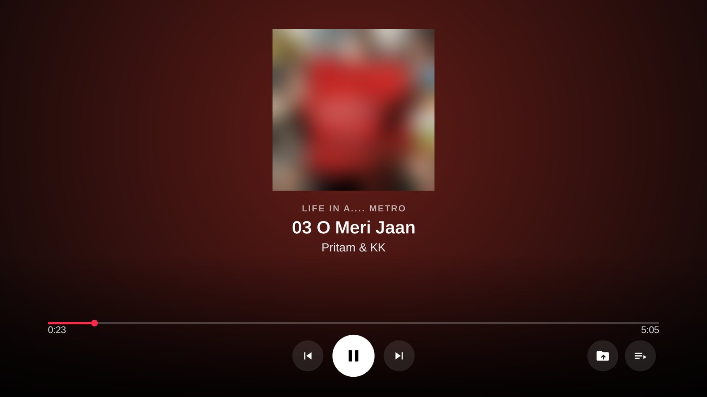</button></div>
    <div class="phone">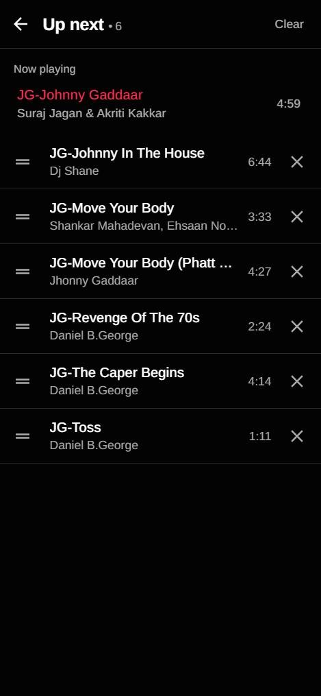</div>
  </div>
  <div class="stats" role="list">
    <div class="stat" role="listitem"><b>70</b><span>commits, each one a reviewed step</span></div>
    <div class="stat" role="listitem"><b>12</b><span>commits on the busiest day, 9 Nov</span></div>
    <div class="stat" role="listitem"><b>5,663</b><span>songs browsed with a TV remote</span></div>
    <div class="stat" role="listitem"><b>2</b><span>screens, one shared player state</span></div>
    <div class="stat" role="listitem"><b>0</b><span>UI frameworks, plain Java and one HTML page</span></div>
  </div>
</div>

<section id="problem">
  <div class="wrap">
    <div class="sec-head">
      <p class="eyebrow">Problem</p>
      <h2>The music was all there. Nothing in the living room could play it.</h2>
      <p class="lede">My collection sits on a single 1 TB USB drive. The drive uses a file system that the AV receiver cannot read, so the receiver, the obvious place to play it, is out. The TV can read the drive, but its built-in media player is a bare file browser.</p>
    </div>
    <div class="setup">
      <svg viewBox="0 0 900 350" role="img" aria-label="My music setup. A JBL floorstanding speaker on the far left and another on the far right, with a JBL subwoofer just before the right speaker. A 1 TB USB drive plugs into the Sony Bravia TV, which reads it. The Yamaha AV receiver sits below the TV, connected by HDMI, and drives the speakers and subwoofer. The receiver cannot read the drive's file system, so the direct route from the drive to the receiver does not work. A phone steers the TV over Wi-Fi.">
        <defs><marker id="sa" markerWidth="7" markerHeight="7" refX="5.5" refY="3.5" orient="auto"><path d="M0 0 L7 3.5 L0 7z" style="fill:var(--good)"/></marker></defs>

        <!-- L speaker, extreme left -->
        <text class="n" x="16" y="46">JBL</text><text x="16" y="62">floorstanding L</text>
        <rect class="sbox" x="16" y="74" width="56" height="168" rx="6"/>
        <circle class="cone" cx="44" cy="102" r="8"/><circle class="cone" cx="44" cy="154" r="16"/><circle class="cone" cx="44" cy="206" r="16"/>

        <!-- R speaker, extreme right -->
        <text class="n" x="884" y="46" text-anchor="end">JBL</text><text x="884" y="62" text-anchor="end">floorstanding R</text>
        <rect class="sbox" x="828" y="74" width="56" height="168" rx="6"/>
        <circle class="cone" cx="856" cy="102" r="8"/><circle class="cone" cx="856" cy="154" r="16"/><circle class="cone" cx="856" cy="206" r="16"/>

        <!-- subwoofer, just before R -->
        <text x="758" y="156" text-anchor="middle">JBL subwoofer</text>
        <rect class="sbox" x="722" y="168" width="72" height="74" rx="6"/>
        <circle class="cone" cx="758" cy="205" r="25"/><circle class="cone" cx="758" cy="205" r="9"/>

        <!-- USB drive -->
        <text class="n" x="180" y="66" text-anchor="middle">1 TB</text>
        <text x="180" y="82" text-anchor="middle">USB drive, 5,663 songs</text>
        <rect class="drv" x="132" y="94" width="96" height="52" rx="8"/>
        <rect class="sbox" x="228" y="112" width="10" height="16" rx="2"/>

        <!-- TV -->
        <rect class="sbox" x="340" y="46" width="220" height="124" rx="4"/>
        <rect x="376" y="170" width="6" height="9" rx="1" style="fill:color-mix(in srgb,var(--muted) 55%,transparent)"/><rect x="518" y="170" width="6" height="9" rx="1" style="fill:color-mix(in srgb,var(--muted) 55%,transparent)"/>
        <text class="n" x="450" y="100" text-anchor="middle">Sony Bravia TV</text>
        <text x="450" y="118" text-anchor="middle">USB Music runs here</text>

        <!-- USB to TV: works -->
        <path class="good" d="M238 120 H340" marker-end="url(#sa)"/>
        <text x="289" y="110" text-anchor="middle">TV reads it</text>

        <!-- phone -->
        <rect class="sbox" x="628" y="58" width="30" height="54" rx="6"/>
        <text x="668" y="82">Phone</text><text x="668" y="96">steers the queue</text>
        <path class="wifi" d="M560 85 H628"/>

        <!-- AVR below the TV -->
        <rect class="sbox" x="345" y="262" width="210" height="56" rx="6"/>
        <rect class="sbox" x="358" y="276" width="70" height="20"/>
        <circle class="cone" cx="505" cy="290" r="14"/><circle class="cone" cx="536" cy="290" r="6"/>
        <text class="n" x="450" y="338" text-anchor="middle">Yamaha AVR</text>

        <!-- TV to AVR -->
        <path class="wire" d="M450 170 V262"/>
        <text x="460" y="222">HDMI</text>

        <!-- AVR to speakers and subwoofer -->
        <path class="wire" d="M345 304 H44 V242"/>
        <path class="wire" d="M555 304 H856 V242"/>
        <path class="wire" d="M758 304 V242"/>

        <!-- USB to AVR: does not work -->
        <path class="bad" d="M180 146 V272 H345"/>
        <circle class="no" cx="262" cy="272" r="9"/><path d="M258 268 l8 8 M266 268 l-8 8" stroke="var(--bg)" stroke-width="2"/>
        <text x="190" y="200">AVR cannot read</text><text x="190" y="214">the file system</text>
      </svg>
      <div class="legend">
        <span><i></i>Works</span>
        <span><i class="b"></i>Does not work</span>
        <span><i class="w"></i>Cable</span>
        <span><i class="f"></i>Wi-Fi</span>
      </div>
    </div>
    <div class="two">
      <div class="card">
        <h3>What the built-in player gave me</h3>
        <ul>
          <li>Folder browsing only. No search, no queue, no "play next".</li>
          <li>No album art unless every file carries it.</li>
          <li>Nothing to control from a phone while sitting on the sofa.</li>
          <li>Thousands of songs in deep year and album folders, navigated one remote press at a time.</li>
        </ul>
      </div>
      <div class="card">
        <h3>The fixed constraints</h3>
        <ul>
          <li>The drive cannot be reformatted or the receiver route used.</li>
          <li>Input is a Bluetooth remote: D-pad, OK, Back. No pointer, no touch.</li>
          <li>Seen from the sofa, so type and focus must read at a glance.</li>
          <li>The phone is the second remote, so both screens must always agree on the song and queue.</li>
        </ul>
      </div>
    </div>
    <div class="hmw"><small>How might we</small>give a big, messy folder library the feel of a streaming app, on a TV with no pointer, and let the phone steer it?</div>
    <figure style="max-width:260px">
      <button type="button" class="zoom" data-src="img/remote.jpg" data-cap="The Sony Bluetooth remote. Every TV interaction had to work with these keys.">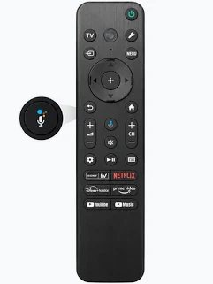</button>
      <figcaption>The only input device. Every focus rule in the TV app starts here.</figcaption>
    </figure>
  </div>
</section>

<section id="approach">
  <div class="wrap">
    <div class="sec-head">
      <p class="eyebrow">Approach</p>
      <h2>Ten years of writing software, now spent on directing it.</h2>
      <p class="lede">I used to type the Java myself. Here I wrote the brief and the rules, Claude wrote the code, and I kept the one job that did not move: deciding what is good. The workflow below repeated for almost every change.</p>
    </div>
    <div class="loop">
      <div><i>Brief</i><b>Say the outcome</b><span>A sentence or two, plus an image when words fail. "Make it centred, one column."</span></div>
      <div><i>Preview</i><b>See it before it exists</b><span>Claude builds a clickable HTML mock. No Android code yet.</span></div>
      <div><i>Critique</i><b>Mark it up</b><span>I draw on the preview, ask for two or three options, and say what is wrong.</span></div>
      <div><i>Decide</i><b>Pick and say why</b><span>One option wins. The reason is recorded so it can be defended later.</span></div>
      <div><i>Build</i><b>Claude codes</b><span>Plain Java, small commits, pushed to CI which compiles the APK.</span></div>
      <div><i>Verify</i><b>On the real TV</b><span>Install, drive it with key events, screenshot it, report what was and was not checked.</span></div>
    </div>
    <div class="two">
      <div class="card">
        <h3>Rules I set on day one</h3>
        <ul>
          <li>Show a visual first and wait for my yes. Nothing goes to the TV without my confirmation.</li>
          <li>Commit and push only when I ask.</li>
          <li>Keep answers short and report outcomes plainly, including what was not tested.</li>
          <li>Match the phone page, and align to YouTube Music as far as the TV allows.</li>
        </ul>
      </div>
      <div class="card">
        <h3>Scope I closed on purpose</h3>
        <ul>
          <li>No PIN, no crossfade, no DLNA, no on/off switch.</li>
          <li>No control of the Yamaha receiver. A Mute button was built, tested against HDMI-CEC, then removed.</li>
          <li>No native phone app. A web page the TV serves is enough, and one QR code opens it.</li>
          <li>A known issue, the TV sleeping after a gap in playback, stays on the list until I ask.</li>
        </ul>
      </div>
    </div>
  </div>
</section>

<section id="interaction">
  <div class="wrap">
    <div class="sec-head">
      <p class="eyebrow">Interaction design</p>
      <h2>On a TV there is no pointer, so focus is the whole interface.</h2>
      <p class="lede">Before polishing screens, I fixed how the product behaves. Five principles kept 70 commits consistent, and I judged every preview against them. They went to Claude as constraints, and I pushed back whenever a build drifted from them.</p>
    </div>
    <div class="princ">
      <div><b>Focus is the cursor</b><span>One thing is highlighted at all times and it is obvious. Resting on a control is enough to act on a view switch, and keys act on press, not release.</span><em>View switch, rail preview, hold-OK menu</em></div>
      <div><b>No dead ends, no surprises</b><span>Up and Down never throw focus into the rail. Left is the only way in. Back always goes up one level. Slow actions ask first.</span><em>Focus rules, Rescan confirmation</em></div>
      <div><b>Quiet until needed</b><span>Rare things are small and grey. Selected is a thin bar, not a block. Controls dim instead of vanishing.</span><em>Settings, Rescan, credit, dim to 30%</em></div>
      <div><b>Content first</b><span>When a song plays, the cover and title carry the screen. Everything else steps back and stays readable from the sofa.</span><em>Full-page player, three-item rail</em></div>
      <div><b>One song, two screens</b><span>Phone and TV show the same song and queue at all times. Anything that existed on one and not the other was removed or matched.</span><em>Shuffle and repeat removed on both</em></div>
    </div>
    <div class="fmap" role="img" aria-label="Focus map: Left enters the rail from content, Up and Down stay inside the content, the rail has a fixed order, and the player bar sits below.">
      <svg viewBox="0 0 640 300" aria-hidden="true">
        <defs><marker id="ah" markerWidth="8" markerHeight="8" refX="6" refY="4" orient="auto"><path d="M0 0 L8 4 L0 8z" fill="currentColor"/></marker></defs>
        <rect class="box" x="6" y="6" width="150" height="238" rx="14"/>
        <text x="20" y="28">RAIL</text>
        <rect class="bg" x="18" y="40" width="126" height="26" rx="13"/><text class="t" x="34" y="58">Search</text>
        <rect class="bg" x="18" y="74" width="126" height="26" rx="13"/><text class="t" x="34" y="92">Folders</text>
        <rect class="bg" x="18" y="108" width="126" height="26" rx="13"/><text class="t" x="34" y="126">Songs</text>
        <rect class="bg" x="18" y="170" width="126" height="22" rx="11"/><text x="34" y="185">Settings</text>
        <rect class="bg" x="18" y="198" width="126" height="22" rx="11"/><text x="34" y="213">Rescan USB</text>
        <path class="acc" d="M13 76 v22"/>
        <path class="ln" d="M31 138 v28" marker-end="url(#ah)"/>
        <text x="40" y="156">fixed order, Up and Down</text>
        <rect class="box" x="190" y="6" width="440" height="238" rx="14"/>
        <text x="206" y="28">CONTENT</text>
        <rect class="bg" x="206" y="38" width="408" height="30" rx="8"/><text class="t" x="222" y="58">Folder view / List view switch</text>
        <rect class="bg" x="206" y="78" width="408" height="30" rx="8" style="stroke:var(--fg);stroke-width:2"/><text class="t" x="222" y="98">Row with focus</text>
        <rect class="bg" x="206" y="116" width="408" height="30" rx="8"/><text x="222" y="136">Row</text>
        <rect class="bg" x="206" y="154" width="408" height="30" rx="8"/><text x="222" y="174">Row</text>
        <path class="ln" d="M590 54 v-0"/>
        <text x="206" y="206">Up and Down stay inside the page</text>
        <text x="206" y="226">Up from the first row goes to Play or the view switch</text>
        <path class="ln" d="M190 93 H160" marker-end="url(#ah)"/>
        <text x="160" y="266" style="fill:var(--accent)">Left enters the rail. Right returns to the same row.</text>
        <rect class="box" x="6" y="276" width="624" height="20" rx="10"/>
        <text x="20" y="290">PLAYER BAR: reached with Down from the last row, Up returns</text>
      </svg>
    </div>
    <div class="sec-head" style="gap:10px"><h3>Timing I specified, and why</h3></div>
    <div class="spec">
      <div><b>320 ms</b><span>Focus rests on a rail item before its page previews. Fast enough to feel direct, slow enough to scroll past.</span></div>
      <div><b>250 ms</b><span>Resting on the other view icon flips the Folders page. No click.</span></div>
      <div><b>15 s</b><span>Player controls stay up, then fade over 700 ms to 30%. They return in 350 ms.</span></div>
      <div><b>1 press</b><span>With controls dimmed, the first D-pad or OK press only wakes them. It never acts by accident.</span></div>
      <div><b>Hold OK</b><span>Song menu: Play next, Add to queue, Go to folder. The Menu key does the same.</span></div>
      <div><b>3 s</b><span>Start-up splash with the credit, so the first frame is intentional while the library loads.</span></div>
    </div>
  </div>
</section>

<section id="phone">
  <div class="wrap">
    <div class="sec-head">
      <p class="eyebrow">Mobile design</p>
      <h2>The phone is the second remote, so I designed it as a remote first and a browser second.</h2>
      <p class="lede">The TV hosts the page. A QR code on the TV opens it, so there is nothing to install. From the sofa it browses, searches and steers the same queue. The brief to myself was one thumb, no hunting, and no doubt about where the sound comes from.</p>
    </div>
    <div class="phones" style="gap:18px">
      <figure><div class="phone"><button type="button" class="zoom" data-cap="Folders first, with one search under the title.">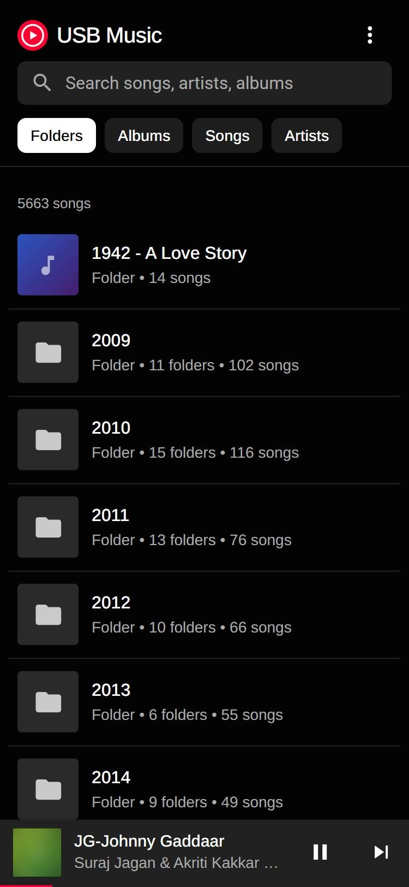</button></div><figcaption><b>Browse</b>Folders is the first tab. Search sits under the title on every screen.</figcaption></figure>
      <figure><div class="phone"><button type="button" class="zoom" data-cap="One search, filtered by type.">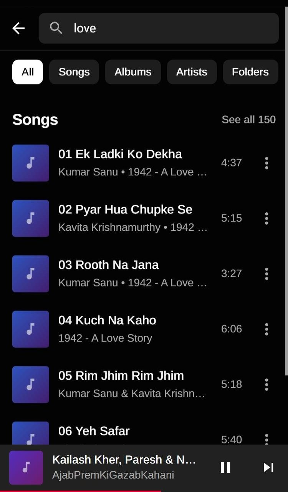</button></div><figcaption><b>Search</b>One search for everything, with filters and a ⋮ on every row.</figcaption></figure>
      <figure><div class="phone"><button type="button" class="zoom" data-cap="Now playing. The header says where the sound is.">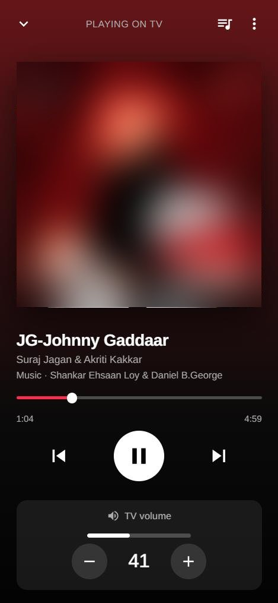</button></div><figcaption><b>Steer</b>"Playing on TV" names the speaker. Volume has its own card.</figcaption></figure>
      <figure><div class="phone"><button type="button" class="zoom" data-cap="Up next: reorder, remove or clear."></button></div><figcaption><b>Queue</b>Drag handles to reorder, × to remove, Clear to start over.</figcaption></figure>
    </div>
    <div class="pcards">
      <div class="card"><h3>Say where the sound is</h3><p>The player header reads "Playing on TV" and volume is a TV volume card. The phone never pretends to be the speaker, which stops the most common confusion with a remote app.</p></div>
      <div class="card"><h3>Thumb first</h3><p>Transport sits at the bottom, in a mini player that opens into the full player. Up next and Settings are sheets that slide over the page. They join the browser history, so the Back gesture closes a sheet instead of leaving the app.</p></div>
      <div class="card"><h3>Browse like a library, act like a remote</h3><p>Folders come first because that is how the library is organised. A folder that holds folders gets a folder icon. Play next and Add to queue live on every row.</p></div>
      <div class="card"><h3>Reachable with the screen locked</h3><p>Lock-screen and notification controls work, so pausing never needs an unlock and a page reload. The silent clip that makes this possible is kept in step with the TV so Play works.</p></div>
    </div>
    <div class="sec-head" style="gap:10px"><h3>Same model, different input</h3><p class="prose" style="max-width:62ch">Both screens run on one player. I kept the model identical and adapted only the input, so what you learn on one carries to the other.</p></div>
    <div class="par" role="table" aria-label="TV and phone compared">
      <div class="row h" role="row"><span>Job</span><span>TV, with a remote</span><span>Phone, with a thumb</span></div>
      <div class="row" role="row"><p>Choose</p><p>Move focus, press OK</p><p>Tap</p></div>
      <div class="row" role="row"><p>Song menu</p><p>Hold OK, or the Menu key</p><p>⋮ on the row</p></div>
      <div class="row" role="row"><p>Go back</p><p>Back key, one level at a time</p><p>Back gesture closes the sheet</p></div>
      <div class="row" role="row"><p>Up next</p><p>Panel from the right, with the player</p><p>Full sheet, drag to reorder</p></div>
      <div class="row" role="row"><p>Volume</p><p>The TV's own remote</p><p>TV volume card with a bar, minus and plus</p></div>
      <div class="row" role="row"><p>Type</p><p>Settings in the rail</p><p>Settings in the ⋮ menu, set separately</p></div>
    </div>
    <div class="sec-head" style="gap:10px"><h3>Phone iterations, and what I cut</h3></div>
    <div class="pcards">
      <div class="card"><h3>Volume</h3><div class="flow"><span>100 bars</span><i>→</i><span>20 bars</span><i>→</i><span class="end">one small bar</span></div><p>A big bar graph invited precision nobody needs from the sofa. The final card has a small bar, a level, minus and plus. Press and hold repeats. <span class="ph">draft rationale, please confirm</span></p></div>
      <div class="card"><h3>Mute</h3><div class="flow"><span>built</span><i>→</i><span>HDMI-CEC reset volume</span><i>→</i><span>hidden</span><i>→</i><span class="end">removed</span></div><p>A real system mute fought the receiver. Rather than ship a button that sometimes lies, I closed the scope: no control of the Yamaha receiver.</p></div>
      <div class="card"><h3>The cover</h3><div class="flow"><span>dummy cover</span><i>→</i><span>folder card</span><i>→</i><span>spinning record</span><i>→</i><span class="end">real cover</span></div><p>Each step replaced a placeholder with something more honest. Missing covers are fetched online and saved as folder.jpg, and the player background takes its colour from the cover. <span class="ph">draft rationale, please confirm</span></p></div>
      <div class="card"><h3>Fade and shuffle</h3><div class="flow"><span>fade between songs</span><i>→</i><span class="end">removed</span></div><p>Fade was built, then cut. Shuffle and repeat were removed from the phone player as well, to match the TV. Fewer controls, same behaviour on both screens.</p></div>
    </div>
  </div>
</section>

<section id="timeline">
  <div class="wrap">
    <div class="sec-head">
      <p class="eyebrow">Timeline from the commit log</p>
      <h2>Phone first, then the TV, then a long day of polish.</h2>
    </div>
    <div class="tl">
      <article>
        <time>27 Oct</time>
        <div><h3>A phone page the TV serves</h3><p>The app became USB Music. The TV hosts a web page, a QR code on its screen opens it, and lock-screen controls work. First look: YouTube Music colours and a folder tree.</p><p class="cm">"YouTube Music style phone UI, TV screen with QR code" · "lock-screen and notification media controls"</p></div>
      </article>
      <article>
        <time>28 Oct</time>
        <div><h3>Phone polish, and the first things I threw away</h3><p>One global search, Folders tab first, a spinning record instead of a dummy cover. Volume went from 100 bars to 20 bars to one small bar. A Mute button was built, then removed once HDMI-CEC reset the volume.</p><p class="cm">"volume as a row of 100 rising bars" → "reduced to 20" → "one small bar"</p></div>
      </article>
      <article>
        <time>3 Nov</time>
        <div><h3>A compact TV panel, reverted the same day</h3><p>Smaller type, QR and buttons were tried and reverted the same day. <span class="ph">[Your input: what looked wrong]</span></p></div>
      </article>
      <article>
        <time>7 to 8 Nov</time>
        <div><h3>Fix the data before the design</h3><p>Missing covers fetched online, a tag tool to write singer, composer and verified covers into the files, an Up next queue, a background tinted from the cover, and a wake lock so the TV stays awake while playing.</p></div>
      </article>
      <article>
        <time>8 Nov</time>
        <div><h3>The TV player, version one</h3><p>Left rail, hero page for a folder, bottom player bar, now-playing page, Up next, hold-OK song menu and search. Previewed in the browser first, then built.</p></div>
      </article>
      <article>
        <time>9 Nov</time>
        <div><h3>The long day: 12 commits</h3><p>Fixes for dropped OK presses and focus, then the view switch, the full-page player, the credit, a calmer Rescan, font settings and rail polish. Most decisions in the next section happened here.</p></div>
      </article>
      <article>
        <time>15 Nov</time>
        <div><h3>Idle controls dim instead of hiding</h3><p>The last refinement so far: controls stay on screen at 30% instead of disappearing.</p></div>
      </article>
    </div>
  </div>
</section>

<section id="decisions">
  <div class="wrap">
    <div class="sec-head">
      <p class="eyebrow">Design iterations</p>
      <h2>Eight decisions, with the options I saw and why one won.</h2>
      <p class="lede">Each block shows what I compared, what I picked and what I said when something looked wrong. Click any image to enlarge it.</p>
    </div>

    <!-- 1 -->
    <article class="decision">
      <div class="d-head"><span class="tag t-tv">TV</span><h3>Layout: borrow the left rail from YouTube Music</h3></div>
      <p class="intent"><b>Intent</b><span>A layout people already know, so nobody learns a new one with arrows.</span><i>Principles: Content first · Focus is the cursor</i></p>
      <div class="cols">
        <div class="card"><h4>Context</h4><p>The first mock had tabs along the top: Folders, Albums, Songs, Artists. That works with a mouse. With a D-pad every tab is a press, and the content below has to share focus with them.</p></div>
        <div class="card"><h4>I asked</h4><p>"Check the YouTube Music tab open in your browser, and align the layout to that as far as possible." Claude studied the reference and proposed a left rail, a hero page for folders and a bottom bar.</p></div>
        <div class="card"><h4>Then I cut</h4><p>Albums and Artists left the rail. Real folders are how this library is organised, so Folders, Songs and Search remain, and Albums and Artists are reached from search results.</p></div>
      </div>
      <div class="grid">
        <figure><button type="button" class="zoom" data-src="img/mock-early-tabs.jpg" data-cap="First mock, with tabs across the top.">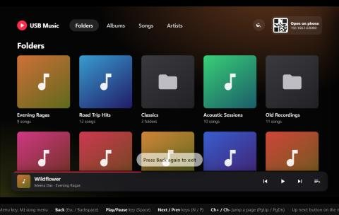</button><figcaption><b class="old">First mock</b>Top tabs. Every tab costs a remote press.</figcaption></figure>
        <figure><button type="button" class="zoom" data-src="img/mock-rail.jpg" data-cap="Rail version, Albums and Artists still present.">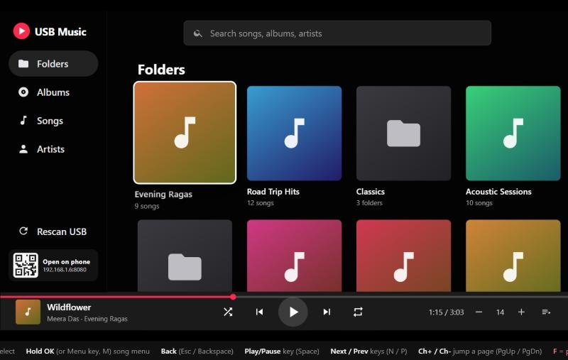</button><figcaption><b>Rail v1</b>Left rail, folder tiles, bottom bar.</figcaption></figure>
        <figure><button type="button" class="zoom" data-src="img/tv-hero.jpg" data-cap="Final folder hero page on the real TV.">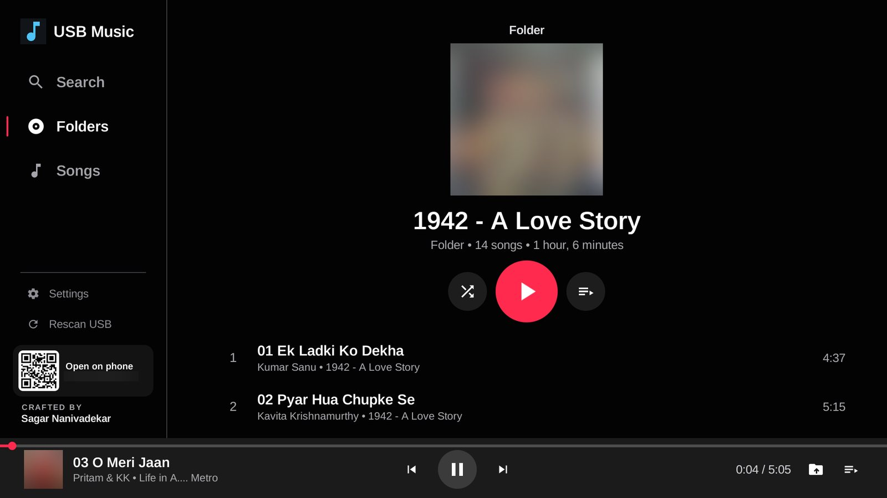</button><figcaption><b class="pick">On the TV</b>Hero page: cover, shuffle, Play, add to queue, numbered songs.</figcaption></figure>
      </div>
      <div class="verdict"><b>Decision</b>Left rail with three items. It matches what people already know from YouTube Music, and Up and Down stay inside the content.</div>
    </article>

    <!-- 2 -->
    <article class="decision">
      <div class="d-head"><span class="tag t-tv">TV</span><h3>Remote behaviour: Up next, hold OK, and keys that map to the phone</h3></div>
      <p class="intent"><b>Intent</b><span>Every action reachable from the keys on the remote, with one gesture for the single thing that needs a menu.</span><i>Principles: No dead ends</i></p>
      <div class="cols">
        <div class="card"><h4>Context</h4><p>No right click and no hover. The song menu (Play next, Add to queue, Go to folder) needed a gesture that a remote can make.</p></div>
        <div class="card"><h4>Options I was offered</h4><p>Long-press OK or a controls row. I chose long-press OK, and the Menu key works too. I also asked how Space, N and P work on a TV. They map to the remote's Play/Pause, Next and Previous media keys.</p></div>
        <div class="card"><h4>Then I tested it</h4><p>A real remote sends clean taps of 80 to 220 ms. Claude had tested with adb key events. I told it the remote is what counts, which led to the "dropped OK press" fixes in the critique log.</p></div>
      </div>
      <div class="grid g2">
        <figure><button type="button" class="zoom" data-src="img/ann-controls.jpg" data-cap="My markup on the hero page: the control cluster.">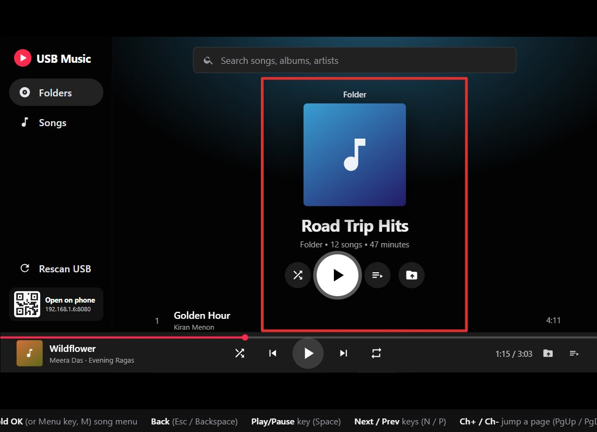</button><figcaption><b class="me">My markup</b>Calling out the control cluster on the hero page.</figcaption></figure>
        <figure><button type="button" class="zoom" data-src="img/mock-up-next.jpg" data-cap="Up next panel in the preview.">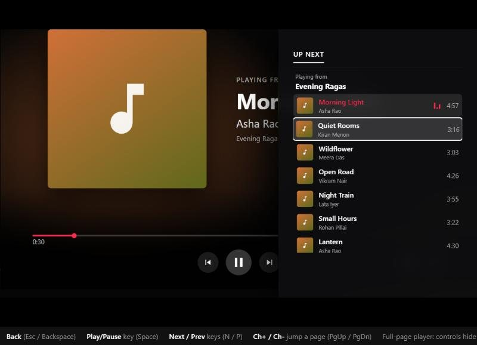</button><figcaption><b>Preview</b>Up next slides in from the right, only while controls are shown.</figcaption></figure>
      </div>
      <div class="verdict"><b>Decision</b>Long-press OK for the song menu, media keys for transport, and every flow tested with the real remote.</div>
    </article>

    <!-- 3 -->
    <article class="decision">
      <div class="d-head"><span class="tag t-tv">TV</span><h3>Folders: grid or list, and how to switch</h3></div>
      <p class="intent"><b>Intent</b><span>Browsing should not demand a decision about browsing. Let focus do the switching.</span><i>Principles: Focus is the cursor</i></p>
      <div class="cols">
        <div class="card"><h4>My brief</h4><p>"Folders page: label and icon to choose between List view and Folder view. Only show visual here. Don't deploy yet."</p></div>
        <div class="card"><h4>Critique, in three passes</h4><p>First a labelled pill pair. Then I asked for icons only. Then: "should work with just switch, no need to click." Resting the cursor on the other icon now flips the view after 250 ms, and a small tooltip names it.</p></div>
        <div class="card"><h4>Final change</h4><p>After living with it I made List view the default. A list shows more of a long library per screen. <span class="ph">draft rationale, please confirm</span></p></div>
      </div>
      <div class="grid g3">
        <figure><button type="button" class="zoom" data-src="img/ann-viewswitch.jpg" data-cap="My markup: add a label and an icon to switch the view.">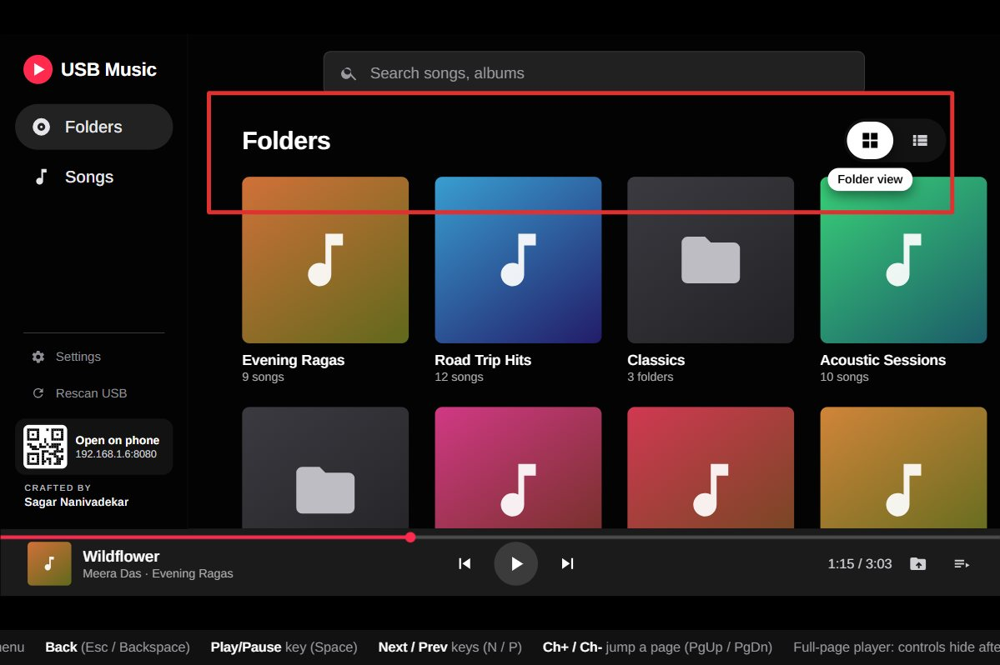</button><figcaption><b class="me">My markup</b>Add the switch here.</figcaption></figure>
        <figure><button type="button" class="zoom" data-src="img/ann-icononly.jpg" data-cap="My markup: icons only.">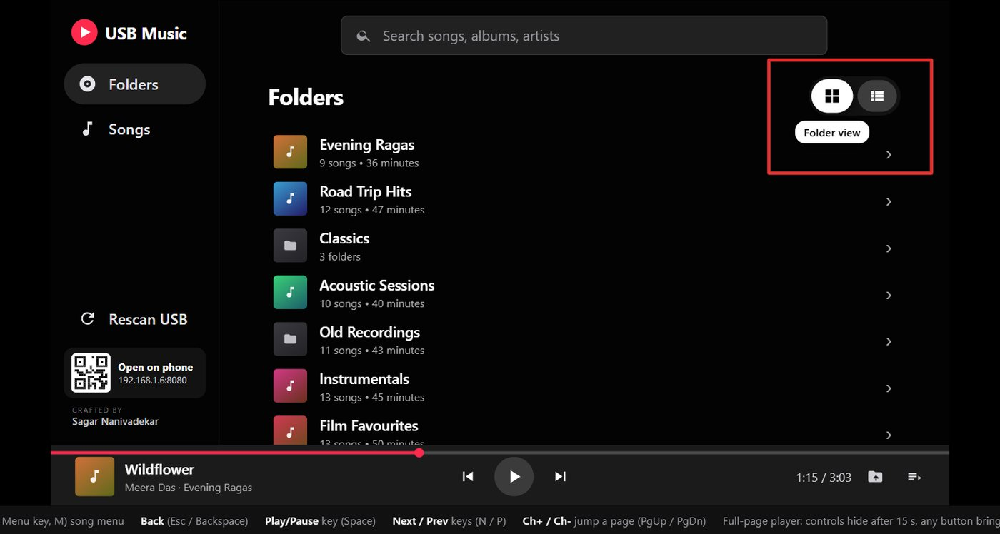</button><figcaption><b class="me">My markup</b>Icons only, drop the words.</figcaption></figure>
        <figure><button type="button" class="zoom" data-src="img/mock-switch-b.jpg" data-cap="Switch variant with a tooltip.">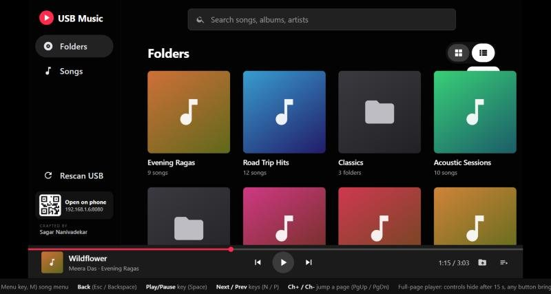</button><figcaption><b>Option</b>Tooltip names the view while focused.</figcaption></figure>
      </div>
      <div class="grid g2">
        <figure><button type="button" class="zoom" data-src="img/tv-folders-grid.jpg" data-cap="Folder view on the real TV.">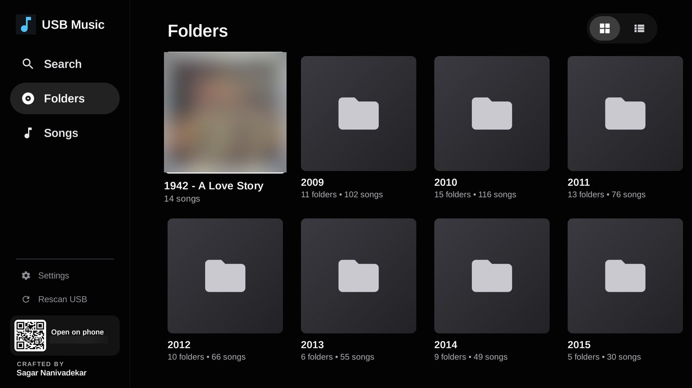</button><figcaption><b>On the TV</b>Folder view, cover tiles.</figcaption></figure>
        <figure><button type="button" class="zoom" data-src="img/tv-folders-list.jpg" data-cap="List view on the real TV, now the default.">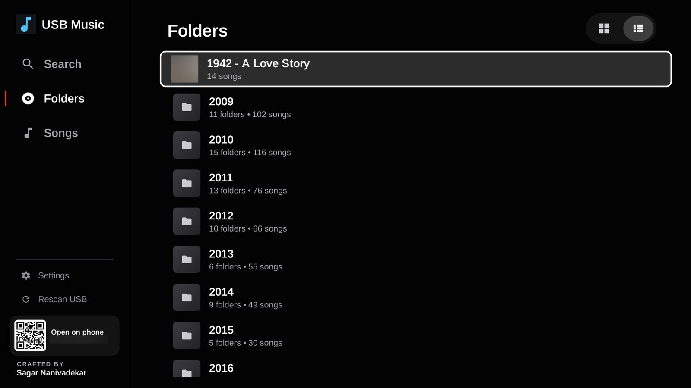</button><figcaption><b class="pick">Default</b>List view, more rows per screen.</figcaption></figure>
      </div>
      <div class="verdict"><b>Decision</b>An icon-only switch that reacts to focus, with List view as the default.</div>
    </article>

    <!-- 4 -->
    <article class="decision">
      <div class="d-head"><span class="tag t-tv">TV</span><h3>The player: from a bar to a full page that gets out of the way</h3></div>
      <p class="intent"><b>Intent</b><span>When a song plays, the song is the interface. Controls stay present but step back.</span><i>Principles: Content first · Quiet until needed</i></p>
      <div class="cols">
        <div class="card"><h4>My brief</h4><p>"Once music starts playing, take it to the full view. Show the controls for 10 to 15 seconds, then hide them. A click shows them again. Make it a centred one-column layout." Shuffle and repeat were removed from the player, on the TV and on the phone page.</p></div>
        <div class="card"><h4>Critique</h4><p>"Remove 'Playing from' above the title." The folder name alone stays, as a small line. Earlier I had flagged that the Play button overlapped the progress bar, which led to smaller controls.</p></div>
        <div class="card"><h4>Later, two refinements</h4><p>Type resized from 68 and 42 to 48, 32 and 24. Then idle controls changed from hidden to dimmed at 30%, so the controls never vanish. <span class="ph">draft rationale, please confirm</span></p></div>
      </div>
      <div class="grid g3">
        <figure><button type="button" class="zoom" data-src="img/ann-playingfrom.jpg" data-cap="My markup: remove 'Playing from'.">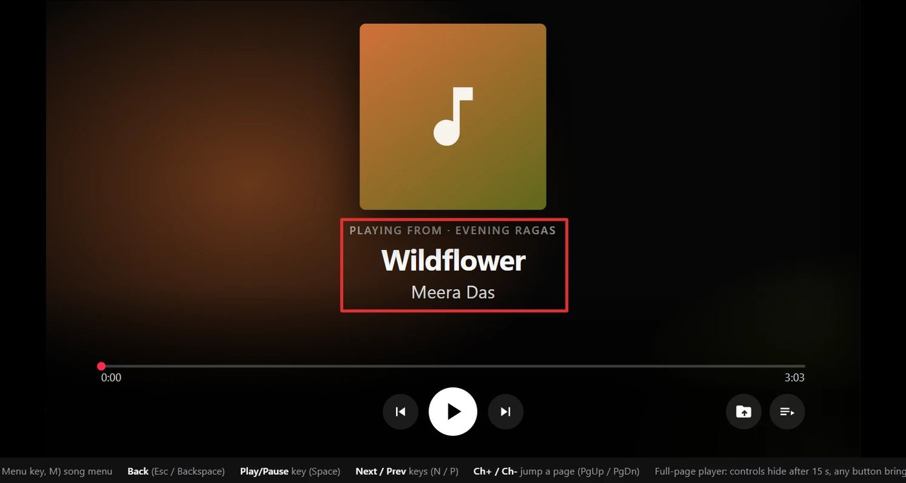</button><figcaption><b class="me">My markup</b>Remove "Playing from".</figcaption></figure>
        <figure><button type="button" class="zoom" data-src="img/mock-np-c.jpg" data-cap="Full-page player, mock iteration.">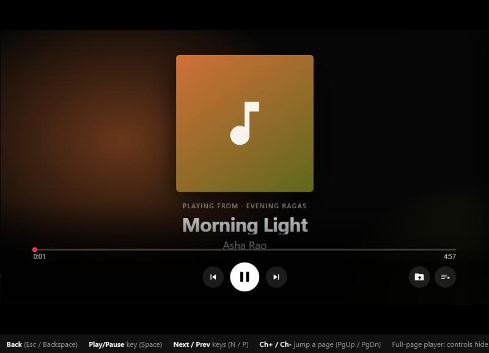</button><figcaption><b>Preview</b>Centred column, controls timing.</figcaption></figure>
        <figure><button type="button" class="zoom" data-src="img/mock-dim.jpg" data-cap="Dimmed idle controls in the preview with the option switcher.">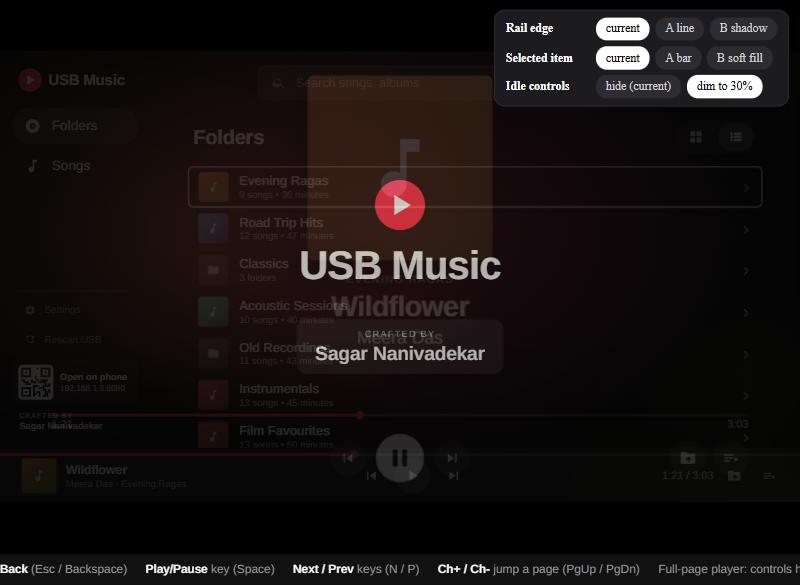</button><figcaption><b>Option</b>Hide, or dim to 30%.</figcaption></figure>
      </div>
      <div class="grid g3">
        <figure><button type="button" class="zoom" data-src="img/tv-player-old.jpg" data-cap="Earlier build: large type, controls hidden.">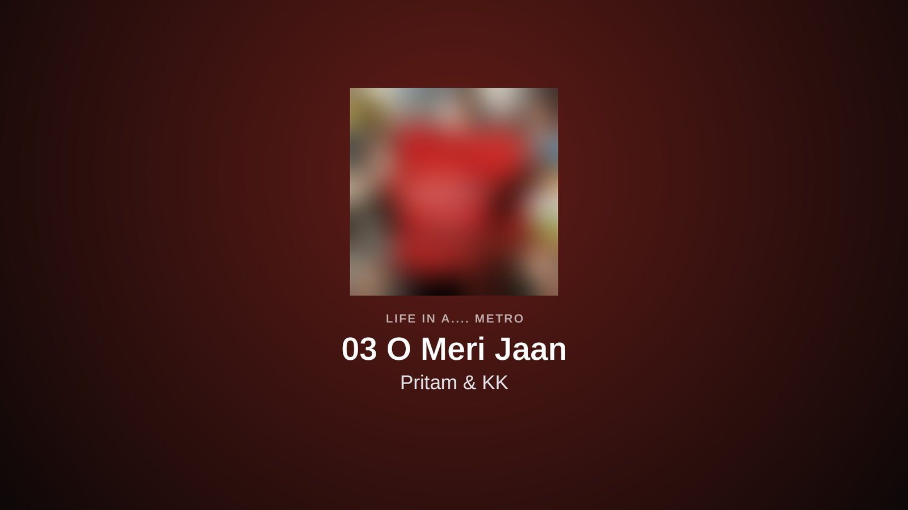</button><figcaption><b class="old">Before</b>Type 68 / 42, controls hidden.</figcaption></figure>
        <figure><button type="button" class="zoom" data-src="img/tv-player.jpg" data-cap="After: controls visible."></button><figcaption><b class="pick">After</b>Type 48 / 32 / 24, controls up.</figcaption></figure>
        <figure><button type="button" class="zoom" data-src="img/tv-player-dim.jpg" data-cap="After 15 seconds: controls dim to 30%.">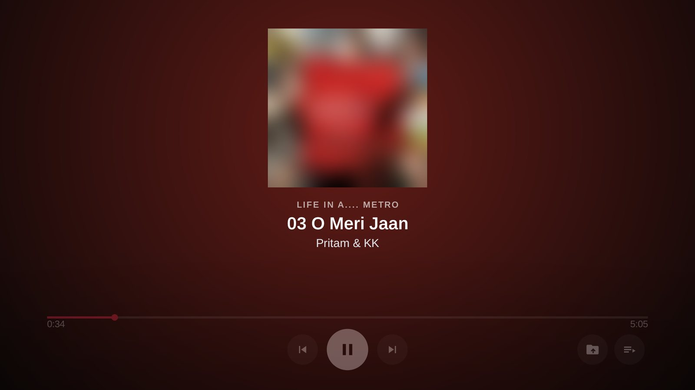</button><figcaption><b class="pick">After 15 s</b>Controls at 30%, still there.</figcaption></figure>
      </div>
      <div class="verdict"><b>Decision</b>A full-page, centred player. Controls fade to 30% after 15 seconds and return with any button.</div>
    </article>

    <!-- 5 -->
    <article class="decision">
      <div class="d-head"><span class="tag t-tv">TV</span><h3>Credit: a signature that does not shout</h3></div>
      <p class="intent"><b>Intent</b><span>Sign the work without competing with the music.</span><i>Principles: Quiet until needed</i></p>
      <div class="cols">
        <div class="card"><h4>My brief</h4><p>"Add a credit to the developer. Only show three visual options, no deployment yet." I wanted my name on the work without a banner.</p></div>
        <div class="card"><h4>Decision</h4><p>"Mix of option 3 and option 1. Change Developer to Crafted by." A short splash on start-up, and a quiet footer in the rail.</p></div>
        <div class="card"><h4>Critique</h4><p>"'Crafted by' is lost due to its colour. Also add a separator before the section." Brighter text, a hairline above, and the rail gained structure.</p></div>
      </div>
      <div class="grid g3">
        <figure><button type="button" class="zoom" data-src="img/mock-credit-a.jpg" data-cap="Credit option, footer.">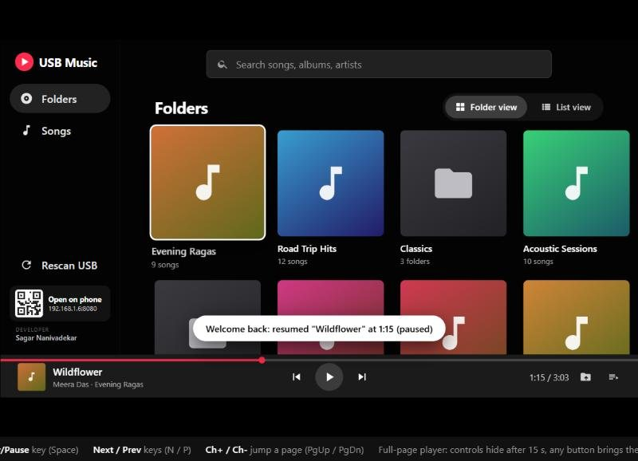</button><figcaption><b>Option</b>Footer credit.</figcaption></figure>
        <figure><button type="button" class="zoom" data-src="img/mock-credit-c.jpg" data-cap="Credit option, About dialog.">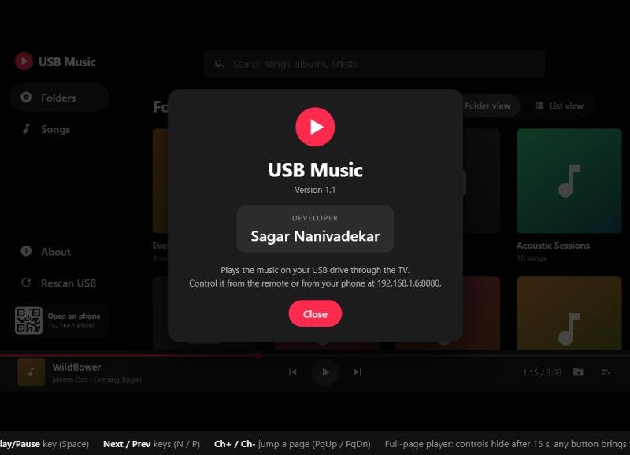</button><figcaption><b>Option</b>About dialog.</figcaption></figure>
        <figure><button type="button" class="zoom" data-src="img/mock-splash-a.jpg" data-cap="Credit option, start-up splash.">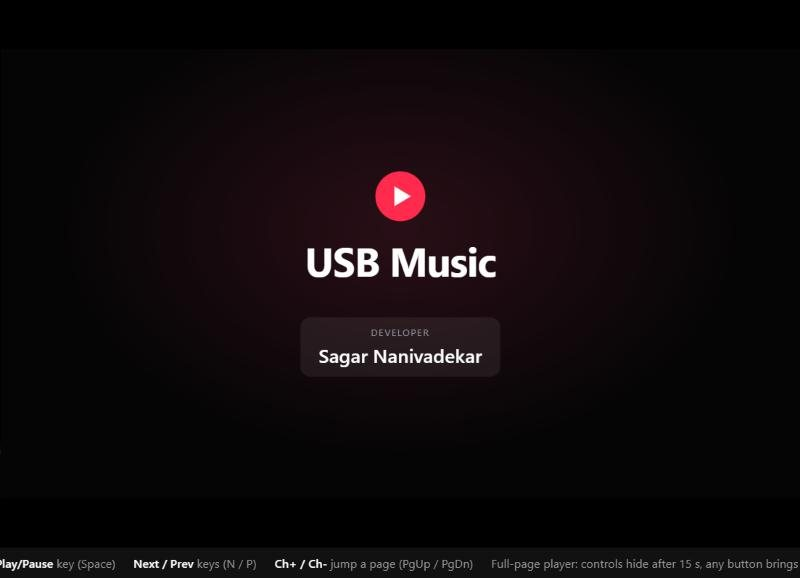</button><figcaption><b class="pick">Picked</b>Splash, mixed with the footer.</figcaption></figure>
      </div>
      <div class="verdict"><b>Decision</b>Splash for three seconds, then a quiet "Crafted by" footer under a separator.</div>
    </article>

    <!-- 6 -->
    <article class="decision">
      <div class="d-head"><span class="tag t-tv">TV</span><h3>Rescan USB: make the dangerous button quiet and careful</h3></div>
      <p class="intent"><b>Intent</b><span>Protect the listener from a slow, disruptive action, and keep that action out of the way.</span><i>Principles: No dead ends · Quiet until needed</i></p>
      <div class="cols">
        <div class="card"><h4>Critique 1</h4><p>"Should ask for confirmation, as it is a long task." A rescan interrupts playback and takes minutes, so one stray OK press should not start it.</p></div>
        <div class="card"><h4>Critique 2</h4><p>"Less emphasis on this, as this won't be the frequently used option." The button was a loud pill. It became a small grey item that lights up only on focus.</p></div>
        <div class="card"><h4>Result</h4><p>A confirm dialog that says what happens and for how long, Cancel focused by default. Rescan sits under a separator, together with the new Settings item.</p></div>
      </div>
      <div class="grid g3">
        <figure><button type="button" class="zoom" data-src="img/ann-rescan1.jpg" data-cap="My markup on the loud Rescan button.">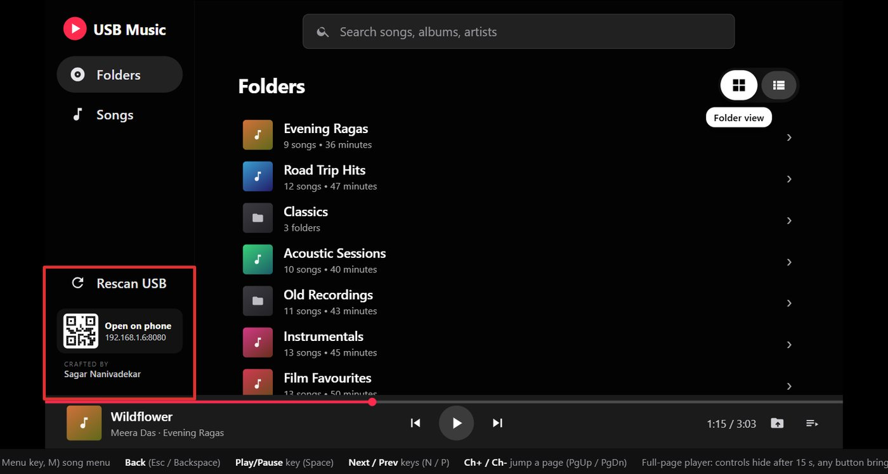</button><figcaption><b class="me">My markup</b>Too loud.</figcaption></figure>
        <figure><button type="button" class="zoom" data-src="img/ann-rescan3.jpg" data-cap="My markup: less emphasis.">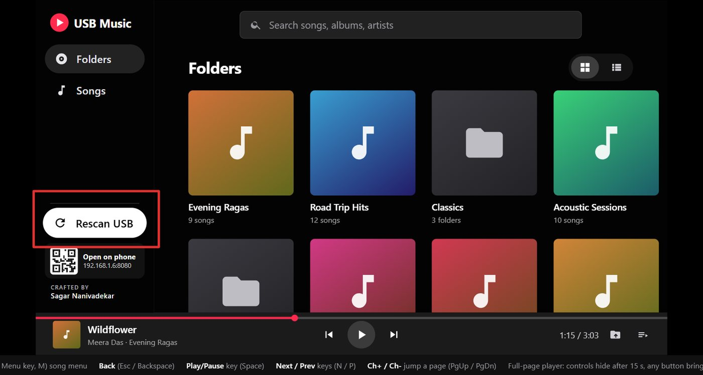</button><figcaption><b class="me">My markup</b>Less emphasis.</figcaption></figure>
        <figure><button type="button" class="zoom" data-src="img/mock-rescan-a.jpg" data-cap="Rescan with confirmation dialog in the preview.">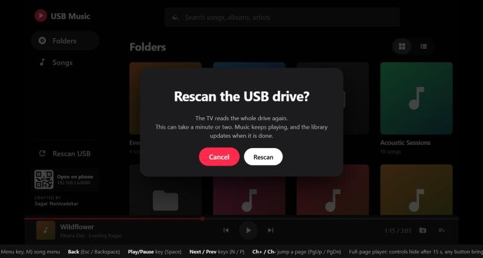</button><figcaption><b class="pick">Picked</b>Quiet item plus a confirmation.</figcaption></figure>
      </div>
      <div class="verdict"><b>Decision</b>A quiet rail item, and a confirmation before the scan starts.</div>
    </article>

    <!-- 7 -->
    <article class="decision">
      <div class="d-head"><span class="tag t-tv">TV</span><span class="tag web">Phone</span><h3>Type: free fonts, a choice, and a correction</h3></div>
      <p class="intent"><b>Intent</b><span>Let taste differ per screen, on a legal footing. A TV and a phone are read at different distances, so each keeps its own setting.</span><i>Principles: One song, two screens</i></p>
      <div class="cols">
        <div class="card"><h4>Context</h4><p>I asked how Helvetica and Apple's San Francisco would look and what Apple uses. Both are licensed. "Dont want to get into licensing for fonts. Tell me what options I have."</p></div>
        <div class="card"><h4>Options shown</h4><p>Preview with Roboto, Inter, Arimo (Helvetica look), Noto Sans, DM Sans, Manrope and Poppins, switchable with number keys. I picked Arimo and asked to keep four of them as a setting on both screens.</p></div>
        <div class="card"><h4>Where Claude was wrong</h4><p>My preview said Arimo was Apache 2.0. The font repository shows SIL Open Font License. Claude corrected it when it bundled the files, and the licence texts now ship in the app.</p></div>
      </div>
      <div class="grid g3">
        <figure><button type="button" class="zoom" data-src="img/mock-font-a.jpg" data-cap="Font comparison in the preview.">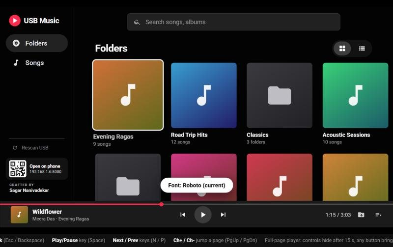</button><figcaption><b>Option</b>Roboto against the alternatives.</figcaption></figure>
        <figure><button type="button" class="zoom" data-src="img/mock-font-c.jpg" data-cap="Rounder option, Poppins.">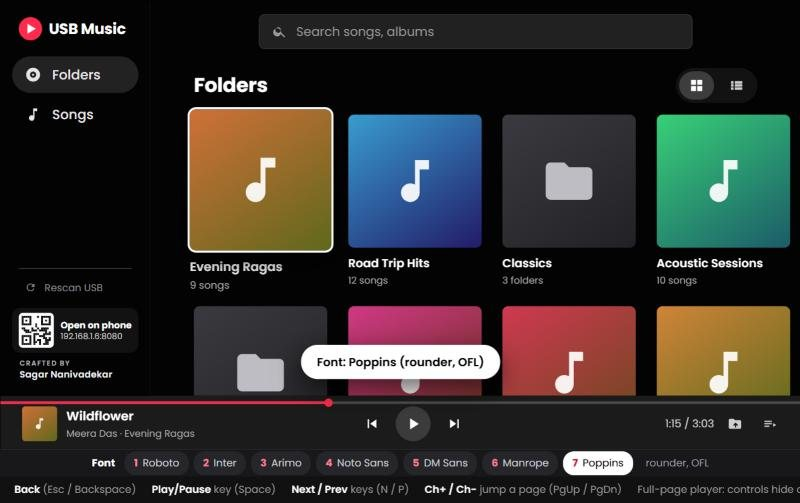</button><figcaption><b>Option</b>A rounder face.</figcaption></figure>
        <figure><button type="button" class="zoom" data-src="img/mock-settings.jpg" data-cap="TV Settings page in the preview.">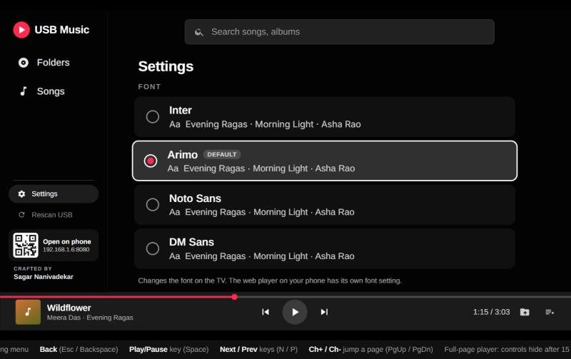</button><figcaption><b class="pick">Picked</b>Settings with four fonts.</figcaption></figure>
      </div>
      <div class="grid g2" style="align-items:start">
        <figure><button type="button" class="zoom" data-src="img/tv-settings.jpg" data-cap="Settings on the real TV, Arimo selected.">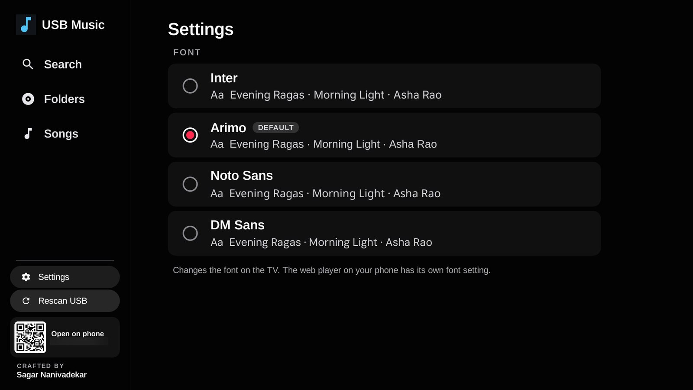</button><figcaption><b class="pick">On the TV</b>Each sample is drawn in its own font. Arimo is the default.</figcaption></figure>
        <div class="phones">
          <figure><div class="phone"><button type="button" class="zoom" data-src="img/ph-settings.jpg" data-cap="Settings on the phone web player.">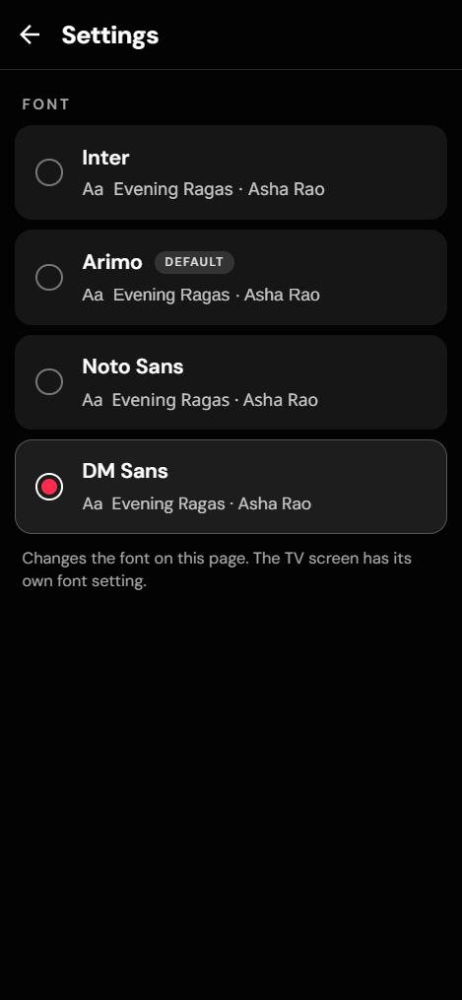</button></div><figcaption><b class="pick">Phone</b>Same four choices, saved in the browser.</figcaption></figure>
        </div>
      </div>
      <div class="verdict"><b>Decision</b>Four open-source fonts in Settings on both screens, Arimo by default. Fonts ship inside the app and are served from the TV, so nothing loads from the internet.</div>
    </article>

    <!-- 8 -->
    <article class="decision">
      <div class="d-head"><span class="tag t-tv">TV</span><h3>The rail itself: a clearer edge and a calmer selected state</h3></div>
      <p class="intent"><b>Intent</b><span>Tell location from focus. Red bar: where I am. White pill: what I am about to press.</span><i>Principles: Focus is the cursor</i></p>
      <div class="cols">
        <div class="card"><h4>Critique</h4><p>"The navigation panel should be a little distinguished from the rest of the page." And: "the selected state of Folders, Songs and Search is a bit bulky. Make it subtle. Give me two options each. Don't declare anything."</p></div>
        <div class="card"><h4>Options</h4><p>Edge: a lighter 2 px line, or a soft shadow. Selected item: a thin red bar on the left with no fill, or a very light fill with smaller corners. I added a live switcher to the preview so I could compare in place.</p></div>
        <div class="card"><h4>My pick</h4><p>The line for the edge and the bar for the selected item. Less bulk, and the bar still marks the current page when focus is in the content. <span class="ph">draft rationale, please confirm</span></p></div>
      </div>
      <div class="grid g3">
        <figure><button type="button" class="zoom" data-src="img/ann-panel-rail.jpg" data-cap="Preview with the option switcher: edge and selected-item variants.">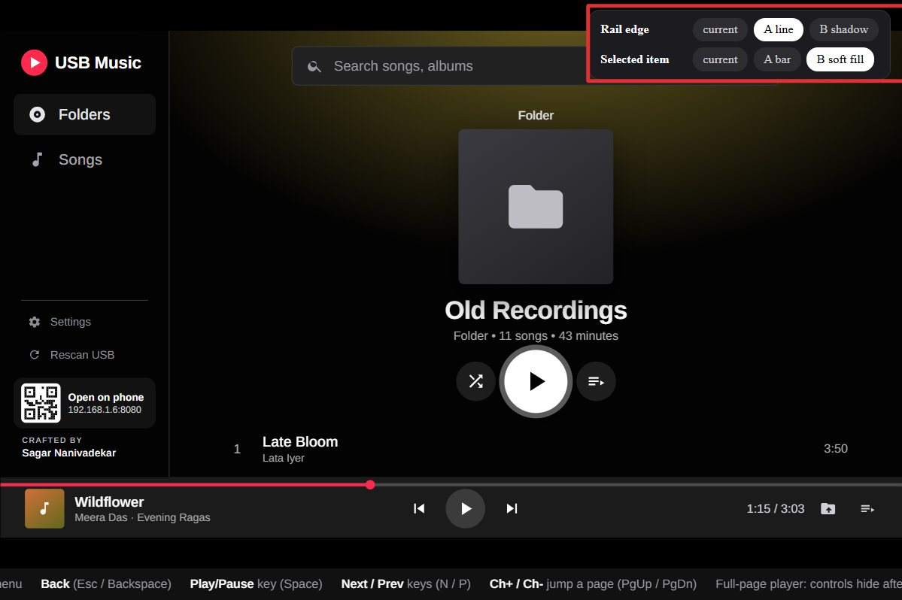</button><figcaption><b class="me">Compare</b>Live options in the preview.</figcaption></figure>
        <figure><button type="button" class="zoom" data-src="img/mock-edge.jpg" data-cap="Edge and selected item options in a list view.">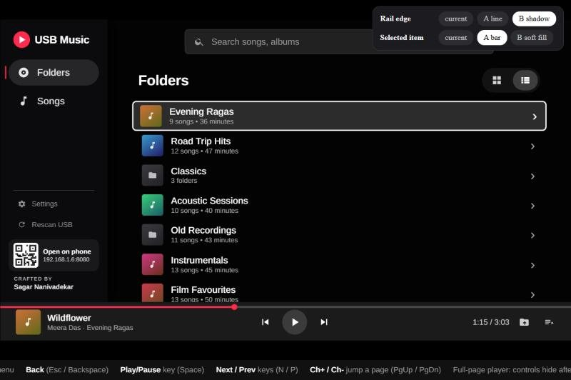</button><figcaption><b>Option</b>Line and soft fill together.</figcaption></figure>
        <figure><button type="button" class="zoom" data-src="img/tv-songs.jpg" data-cap="The shipped rail on the TV, Songs selected.">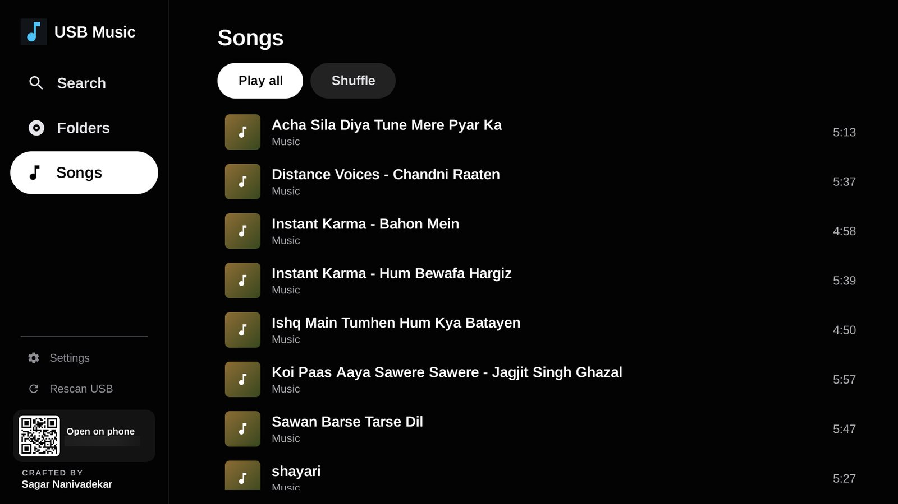</button><figcaption><b class="pick">Shipped</b>Hairline edge, accent bar, Songs selected.</figcaption></figure>
      </div>
      <div class="verdict"><b>Decision</b>A 2 px edge line and a red bar for the selected item. The white pill stays for the item under the remote.</div>
    </article>
  </div>
</section>

<section id="critique">
  <div class="wrap">
    <div class="sec-head">
      <p class="eyebrow">Critique log</p>
      <h2>Where my own eye and my dev background caught what the first draft missed.</h2>
      <p class="lede">Some of these came from looking at a screenshot. Others came from driving the TV and knowing what to suspect in the code. All of them were found by testing on the device, not by reading Claude's summary.</p>
    </div>
    <div class="log" role="table" aria-label="Critique log">
      <div class="row h" role="row"><span>What I saw</span><span>What changed</span><span>Found by</span></div>
      <div class="row" role="row"><p>OK on a folder did nothing, most of the time.</p><p>Root cause was a flood of relayouts, about 5,000 in 75 seconds, that reset the pressed state. Persistent drawables and activation on key down fixed it.</p><p class="who u">User testing, real remote</p></div>
      <div class="row" role="row"><p>Up from the first song jumped into the rail and lost the folder.</p><p>Lists never move focus into the rail. Left is the only way in. Up from the first row goes to Play, or to the view switch.</p><p class="who u">Scroll test</p></div>
      <div class="row" role="row"><p>Focus was invisible at launch after a "fix".</p><p>My own regression. Reverted the selectable headers and scrolled to the top instead.</p><p class="who c">Claude, caught on screen</p></div>
      <div class="row" role="row"><p>The app opened on Search, not Folders.</p><p>The system focused the first rail item. Focus is now forced to the current tab at start-up.</p><p class="who c">Device check</p></div>
      <div class="row" role="row"><p>Play/Pause overlapped the progress bar.</p><p>Smaller buttons, adjusted scale, and a layout rule in the preview that stopped it recurring.</p><p class="who u">Screenshot</p></div>
      <div class="row" role="row"><p>Down from Songs jumped into the song list, not Settings.</p><p>Explicit Up and Down order for the rail items.</p><p class="who c">Verification run</p></div>
      <div class="row" role="row"><p>Search had no visible magnifier and an unclear hint.</p><p>Hint now reads "Search songs, albums" with a magnifier icon.</p><p class="who u">Screenshot</p></div>
      <div class="row" role="row"><p>The "Crafted by" credit was too dark to read.</p><p>Brighter text and a separator above the block.</p><p class="who u">Screenshot</p></div>
      <div class="row" role="row"><p>A claimed font licence was wrong.</p><p>Arimo is SIL OFL, not Apache. Licence files bundled and noted in the README.</p><p class="who c">Claude, on download</p></div>
      <div class="row" role="row"><p>A compact TV panel with smaller type, QR and buttons.</p><p>Tried and reverted the same day. <span class="ph">[Your input: the reason]</span></p><p class="who u">On the TV</p></div>
    </div>
  </div>
</section>

<section id="claude">
  <div class="wrap">
    <div class="sec-head">
      <p class="eyebrow">Working with Claude</p>
      <h2>What I handed over, what I kept, and what I would tell another designer.</h2>
    </div>
    <div class="pairs">
      <div class="card"><h3>What I gave to Claude</h3><ul><li>All Java and HTML, including a custom focus system for a ListView.</li><li>Building preview mocks in minutes, with options on demand.</li><li>CI builds, installs on the TV, screenshots and key-event testing.</li><li>Docs: the README and a Context.md that carries the project between sessions.</li></ul></div>
      <div class="card"><h3>What I kept</h3><ul><li>Every decision about what the product is and what it is not.</li><li>The critique: marking up screenshots and naming exactly what is wrong.</li><li>Deploy approval. Nothing reached the TV without my yes.</li><li>The test on the real remote, in the real room.</li></ul></div>
    </div>
    <ul class="rules">
      <li><b>Ask for options, not answers.</b><span>"Give me two visual options. Don't declare anything." Two real options force a reason, and the reason is the design.</span></li>
      <li><b>Make the preview cheaper than the build.</b><span>A browser mock takes minutes to change. Android code takes a build and an install. Decide in the cheap medium.</span></li>
      <li><b>Set principles, then judge against them.</b><span>"Focus is the cursor" and "quiet until needed" turned taste into a test. When a build broke one, I could name which, and Claude could fix the cause.</span></li>
      <li><b>Direct the behaviour, not only the look.</b><span>Timings, focus order and what a button does when pressed twice are design decisions. I specified them, then watched them run on the TV.</span></li>
      <li><b>Design the second screen as its own device.</b><span>The phone is not a small TV. I asked what a thumb needs, what the TV already shows, and what must never disagree between them.</span></li>
      <li><b>Mark up the screenshot.</b><span>A red box and six words beat a paragraph. Claude reads images well and answers the thing you pointed at.</span></li>
      <li><b>Never accept "should work".</b><span>Ask what was tested and how. A synthetic key event is not a Sony remote, and the report must say so.</span></li>
      <li><b>Use the developer in you for root causes.</b><span>"OK does nothing" was a rendering loop. Knowing where to look turned a vague complaint into a precise fix.</span></li>
      <li><b>Keep a context file.</b><span>The project's Context.md records decisions and constraints, so a fresh session continues instead of re-deriving.</span></li>
    </ul>
    <div class="quotes">
      <blockquote>"Only show visual here. Don't deploy yet."<cite>BRIEF · VIEW SWITCH</cite></blockquote>
      <blockquote>"Should ask for confirmation, as it is a long task."<cite>CRITIQUE · RESCAN</cite></blockquote>
      <blockquote>"Dont want to get into licensing for fonts. Tell me what options I have and show visual preview."<cite>CONSTRAINT · FONTS</cite></blockquote>
      <blockquote>"Give me the two visual options first."<cite>PROCESS · EDGE AND SELECTION</cite></blockquote>
    </div>
  </div>
</section>

<section id="outcome">
  <div class="wrap">
    <div class="sec-head">
      <p class="eyebrow">Outcome</p>
      <h2>A living-room player that feels like a streaming app, running off a USB drive.</h2>
      <p class="lede">The TV browses 5,663 songs with a remote, and the phone steers the same queue. The app is a plain Android project and one web page, built over three weeks.</p>
    </div>
    <div class="two">
      <div class="card">
        <h3>Personal impact</h3>
        <p><span class="ph">[Your input: how often it is used, who uses it at home, what changed in the evening routine]</span></p>
        <p><span class="ph">[Your input: time you spent per week, versus an estimate for building this by hand]</span></p>
        <p><span class="ph">[Your input: one moment where the TV player felt right]</span></p>
      </div>
      <div class="card">
        <h3>What I would do next</h3>
        <ul>
          <li>Fix the TV sleeping after a gap in playback.</li>
          <li>A native phone app, if the web page limits lock-screen use.</li>
          <li>Scan covers for the folders that still show a placeholder.</li>
          <li>Run a short usability session with family on the real remote, and measure time to first song.</li>
        </ul>
      </div>
    </div>
    <div class="card">
      <h3>Reflection</h3>
      <div class="prose">
        <p>Previous projects taught me that the expensive part of software is rarely typing. It is deciding, and finding out you decided wrong after the build. Working with Claude moved nearly all the learning into the cheap stage: a preview, a markup, a second option.</p>
        <p>The skill that mattered most was not prompting. It was critique: naming exactly what is wrong, and refusing to accept a summary in place of a test on the real device.</p><p><span class="ph">draft in your voice, please rewrite</span></p>
      </div>
    </div>
  </div>
</section>
</main>

<footer>
  <div class="wrap">
    <span>Sagar Nanivadekar · Lead UX Designer · Pune, India</span>
    <span>Draft, first pass. Covers and the TV address are blurred in screenshots.</span>
  </div>
</footer>

<script>
(function(){
  var lb=null;
  function close(){ if(lb){ lb.remove(); lb=null; document.removeEventListener('keydown',onKey); } }
  function onKey(e){ if(e.key==='Escape') close(); }
  function open(src,cap){
    close();
    lb=document.createElement('div'); lb.id='lb'; lb.setAttribute('role','dialog'); lb.setAttribute('aria-label','Image viewer');
    var d=document.createElement('div'); var im=document.createElement('img'); im.src=src; im.alt=cap||'';
    d.appendChild(im);
    if(cap){ var p=document.createElement('p'); p.textContent=cap; d.appendChild(p); }
    lb.appendChild(d); lb.addEventListener('click',close); document.body.appendChild(lb);
    document.addEventListener('keydown',onKey);
  }
  document.addEventListener('click',function(e){
    var b=e.target.closest('.zoom'); if(b){ open(b.dataset.src||b.querySelector('img').src,b.dataset.cap); }
  });
})();
</script>
